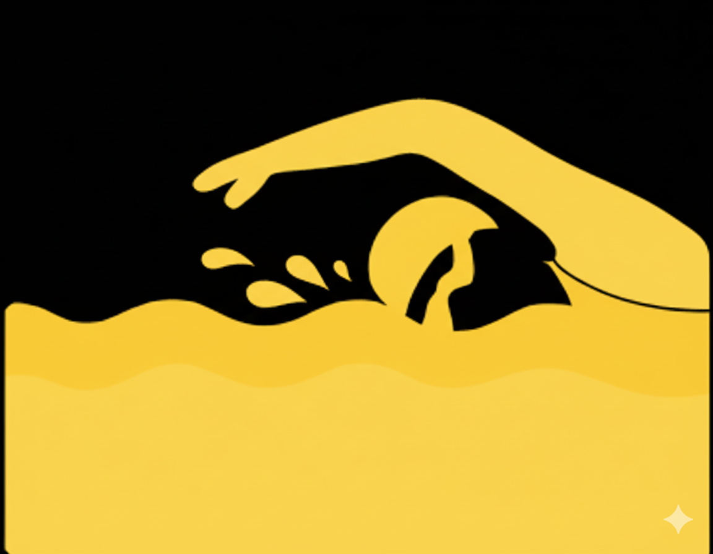
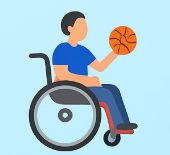

Futebol Adaptado
Esporte coletivo que fortalece o trabalho em equipe.

Natação Paralímpica
Excelente para reabilitação e condicionamento.

Basquete em Cadeira de Rodas
Desenvolve coordenação e espírito de equipe.

Atletismo Adaptado
Corridas e lançamentos para superação pessoal.

Tênis de Mesa Paralímpico
Trabalha reflexos e coordenação motora.